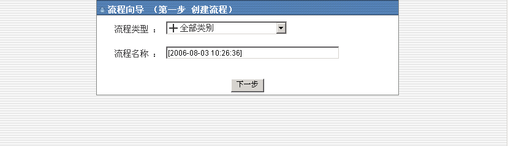
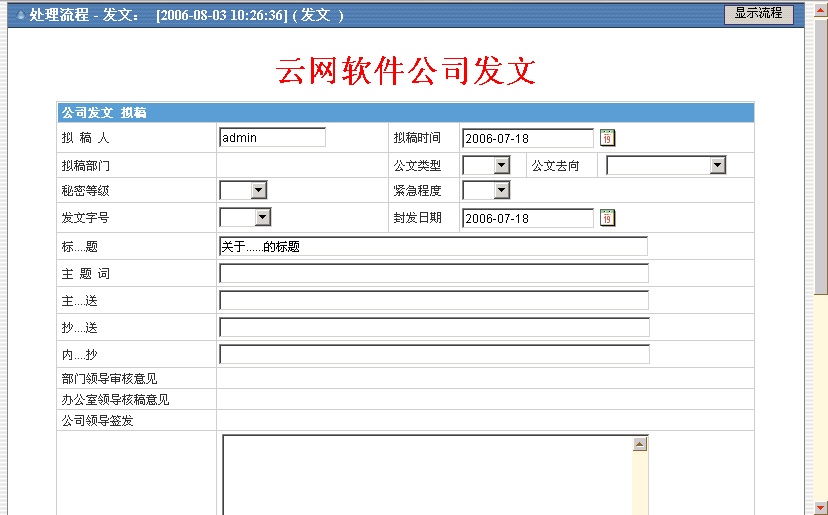
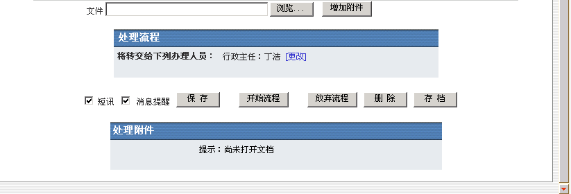
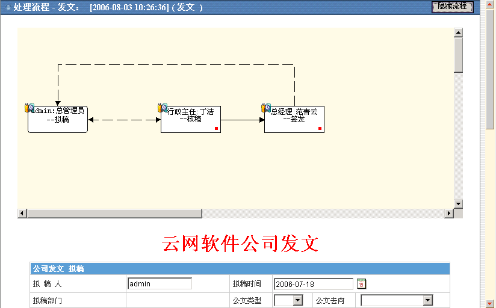
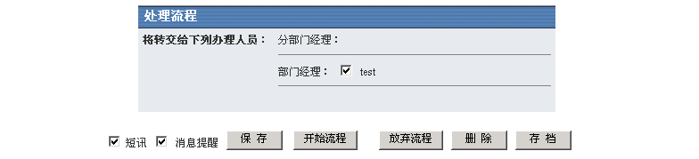

发起流程 |
| “工作流”下的“发起流程”用于发起流程。 1. 进入左侧功能菜单 行政管理→工作流→发起流程，进入流程向导第一步创建流程如图1选择“流程类型”,系统会自动生成“流程名称”，用户也可以自定义流程名称。 2. 进入下一步“发文”如图2然后输入相关信息，点击“开始流程”后将会提示“操作成功”转到“待办工作流”页面。 注意： |
 |
图 1 |
|  |
图 2 |
|  |
图 3 |
|  |
图 4 |
| 点击“显示流程”将会出现预定义流程。输入相关信息后点击“发起流程”，便可发起流程。（注意：是/否显示流程，是根据管理员来设置） |
|  |
| 上传附件：点击“浏览”按纽后，选取文件，若要上传多个文件，可点击“增加附件”，最后点击“保存”按纽，如下图： |
| 如果上传的是office文档后，将可以用officeEdit控件，在线编辑该文档，删除附件，点击“删除”。 |